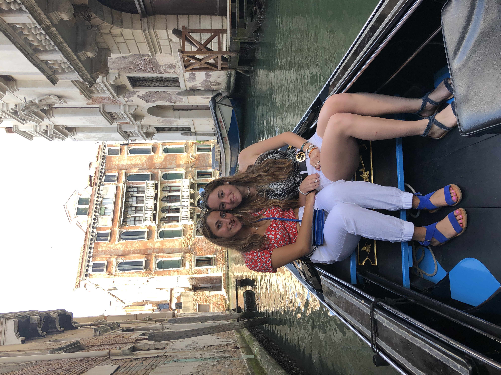

Venice is a beautiful city that is surrounded by water. There are many things to see and do that you don't want to miss out on. When going to Venice definitely take a gondola ride. Sit and enjoy the ride and views while listening to some history and music by the rower. It is a fun and different experience that is great for all ages!